| Opera TipsUpdated
24 January, 2012
| Opera 11.61 is now available via check for updates or from the main dowload page by clicking the banner above. There are several significant changes in this update. See the Changelogs for details.
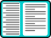 The side by side mail list view now has an optional two line list view like Outlook, with the subject first, followed by an indented line showing the date and from mail address. Mails can be pinned for attenion - includes IMAP support for flagging. The drop list in the URL field no longer shows the favicons for visted sites. Bookmarks are no longer listed first in the URL field quick find. Implemented the HTML5 parsing algorithm, which will improve website compatibility.
Older versions are available from the Opera FTP Server by browsing the folder listings. | PeaceKeeper Results1428 • Opera 11.52 1150 • Opera 11.61 1131 • Opera 12.00 1023 • SRWare Iron 13.0.8
992 • Opera 11.60 887 • Firefox 8.0 828 • Firefox 9.0 111 • IE 8.0
| Opera 11.61 BugsBackground images no longer display. (This page has a background image). Numbered lists do not align correctly. Performance ion the PeaceKeeper benchmark is signficantly slower than 11.52.
| Contents
-
| There are some excellent resources on the internet, and many forums where one can discuss all aspects of Buddhism. Opera browser can be customised in many ways to make
the learning process more enjoyable. Installation is quick and simple. For maximum security, I recommend that you install Opera to an encrypted drive. Then
set multiuser=0 in operaprefs_default.ini. This keeps all sensitive data like your email contacts, emails, passwords, and bookmarks on the encrypted drive. Follow the Advanced options link on the download page to find other versions for Linux, Mac OS X, etc. Opera is free, and if you register on the Opera forums you can get free support from other users, as well as 2 Gbytes of server space for your blog, photos, forums, etc. On this page and my Buttons Page you will find many tips to customise Opera. | 1. Working in Fullscreen ModeIf you like to get rid of all of the toolbars in Opera, just press F11. In fullscreen mode you can bring
back the panels (F4), the Address Bar (Control F8), or the Scroll Bars (Control F7). You can also bring back any of the toolbars from the View Menu.If you want to customize the fullscreen mode so that the toolbars you want are always shown, you can do this by editing the keyboard from the preferences menu. Preferences (Alter P) Mouse and Keyboard Keyboard Setup, Edit Quick Find, F11
| 2. Opening Graphics in Irfan ViewIrfan View is an excellent Freeware Graphic program that can be used to convert, resize, crop, rotate, and perform many other common operations on graphics. While browsing the web it is handy
to be able to open an image to take a closer look. Add the following lines to menu.ini to add an option to the popup menu when right-clicking on an image. [Image Popup Menu]
… …
Item, 67651= Open image
Item, "Open in Irfan View"=Copy image,-2,urlinfo,,"Attachment Images" & Execute program, "C:\Program Files\IrfanView\i_view32.exe", "/clippaste"
You may need to change the path if you have installed Irfan View in a different directory. This tip will only
work perfectly with applications that accept command line parameters. In Photoshop or other programs one will have to manually paste the graphic from the clipboard, as the “/clippaste” function will not work. | 3. Customised Opera Menu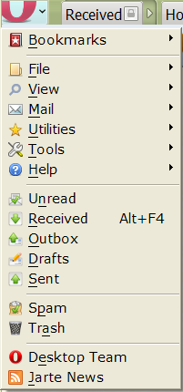I have updated my simplified menu for Opera 11.51. If I missed something vital I will update the menu later. There is an item on the Help menu, to check this section for updates. This browser button menu on the big O was designed without any regard for usability. It includes many unnecessary items. If you want to fix it, just add the first line of this short section to your customised menu.ini file to include the browser menu bar. If you want to include the mail access points menu too, add the separator line and the Include, Mail Access Points Menu line. Then you will also need to add that section to your custom menu. [Browser Button Menu Bar]
Include, Browser menu bar
--- Mail Access Points ---
Include, Mail Access Points Menu Holding down the Alter key will now show just the single column browser menu at the top left corner of the window, if the main menu bar is disabled. The big O button will appear on the Page Bar Head toolbar. This will show the browser button menu bar popup menu, just as the alter key does. My updated menu has a simplified main browser menu, so this will appear from the button as illustrated. If you modify your own customised menu by adding the section as suggested above, you will see the usual main menu that you see at the top of the window when it is enabled. Opera has so many features that it can be overwhelming. Although I am an experienced Opera user, I
don’t use half of the menu options. Download my customised menu to try it out. You can easily revert to the standard menus, or create your own custom menu. At least it may give you some ideas for your own
simplified menu. Open the above link, or right-click, and “Save target as...” to save it to your hard disk. Browse to your profile folder (see Help, About Opera) and save it in the \profile\menu\ folder. Then select the Opera Tunny menu from Preferences, Advanced, Toolbars, Menu Setup. 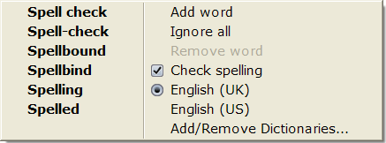The default context menu when using spell check in an edit field includes many items that are not needed while spell checking. This often results in the suggestion list being far away from the word being corrected. To replace or add a word, the user must move the mouse a long way. This is very inefficient. I have finally found a workable solution. I edited this section
of my custom menu to comment out one line with a semicolon. 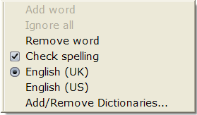[Edit Widget Popup Menu Spellcheck Word]
Include, Internal Spellcheck Suggestions
BreakItem
Item, M_INTERNAL_SPELLCHECK_ADD_WORD = Add word
Item, M_INTERNAL_SPELLCHECK_IGNORE_WORD = Ignore word
Item, M_INTERNAL_SPELLCHECK_REMOVE_WORD = Remove word
Item, M_INTERNAL_SPELLCHECK_ENABLE = Spell check | Spell check
Include, Spellcheck Language 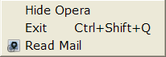The popup menu is as short as possible when right-clicking on an error or a valid word with spell-check enabled. To get the usual context menu, right-click on any blank space at the end of a paragraph, or before a space between words. Opera has a System Tray Icon. Right-clicking on this icon pops up up a menu. The default menu is too
complex for my liking, so I simplified it. With Opera hidden in the system tray you can use the tray icon menu to go directly to your email, open Opera, or exit Opera. Thanks to MarcFou for help with this tip. | 4. Mouse Gesture Popup Menu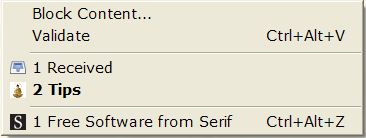By combining two of Opera’s features you can have a popup menu like that on the right, which appears only when executing a mouse gesture. This is different to the regular popup menu that appears on right-clicking the mouse. This gesture
now brings up the mouse gesture popup menu, with options to block content on the page, validate the source code, switch to other open pages, or reopen pages closed during the current session. Add this section or one like it to your customised menu or use my customised menu. [Mouse Gesture Menu]
Item, M_BLOCK_CONTENT = Content block mode on | Content block mode off
Item, M_DOCUMENT_POPUP_MENU_VALIDATE= Validate frame source
---Open Windows---
Include, Internal Window List
---Closed Windows---
Include, Internal Closed Window List
Then in Preferences, Shortcuts, Mouse Setup, modified the mouse gesture action: Gesture Up = Show popup menu, "Mouse Gesture Menu" GestureUp is one of the easiest Gestures to perform. Its default action is to Stop the loading of the current page. If you still wanted to use that you would assign the [Mouse Gesture Menu] to another gesture that you don’t use so often. Mouse Gestures can be context-senstive. You could, for example, enter a mouse gesture in the Advanced, Edit Widget section of your customized mouse setup to run the Spell Check. The possibilities are endless — the beauty of Opera is that you can tailor it to your needs. My ideas are just suggestions to feed your imagination. Every user has different priorities. The default menu setup needs to show all of the options somewhere, but that is too much for most users, let alone for beginners. | 5. vBulletin Code Menu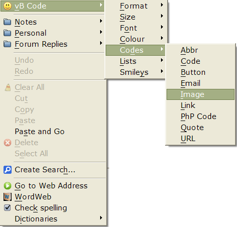You can use this popup menu in edit boxes to insert vBulletin code. Many bulletin boards provide buttons and dropdowns for formatting text in messages, but
this menu makes it easier and adds some options not found on most forums. The [Button] code is specific to the Opera Forums, and won’t work elsewhere. Select some text then right-click and choose the vBcode you wish to apply to the selected text. The result will like this: [Color=Blue]selected text[/color] or [opbut=Print options]Text[/opbut] You may need to edit the code a little. | 6. Utilities MenuYou can easily add custom menus to the Browser Menu Bar. In my customised menu I have defined a menu from which I
can run a few utilities, open frequently edited files, and browse to favourite directories in Windows Explorer. The following line is added to the [Browser Menu Bar] section of my customised menu.ini file: Submenu, "Utilities", Browser Utilities Menu The [Browser
Utilities Menu] section contains a line for each program on the menu. Whatever items you add to this section will be displayed on the menu, which can be on the main menu bar, on a submenu, on a button, on the right-click popup menu, or opened with a mouse gesture or a keyboard shortcut. Each item needs a title that will appear on the menu. The icons are optional. I have added icons for each
item just because I could. On Opera’s default menus, only the most frequently used items have associated icons. Icons make it quicker to find key items. To open the utilities menu with a keyboard shortcut, edit your keyboard (Preferences, Mouse and Keyboard) to add the following action for a new shortcut, e.g. u alt • Show popup menu, "Browser Utilities Menu"
| 7. Toolbar TipsOpera has several different toolbars. You may
think that you need at least the browser toolbar, the address bar, the page bar, the scroll bars, and the menus. In fact, you can make do with just the address bar and the page bar (tab bar). You can download my customised Compact Toolbar to try it out. Save it in your \Opera\Profile\toolbar\ folder, then select it from Preferences, Toolbars and menus. The utilities button requires my Unite menu to work. For individual buttons, see my buttons page. You will find many of my custom buttons on the My Buttons palette after you install the customised toolbar. »» Use a compact skin. The Windows Standard skin is compact, but it has a dark them. If you prefer a skin with larger icons and brighter colours, the D.T.A. skin (illustrated below) is excellent. Set the options to “images only,” and “show extender menu” to use all available space. Add the address field to the browser toolbar, so you don’t need the address bar.
 My customised menu adds the full browser menu to the right-click document menu, so you
don’t need the menu bar. Click the menu button on the page bar head to view a drop down menu, or click and hold to show the menu bar for ten seconds. You can also toggle the menu with a keyboard shortcut or mouse gesture. My customised menu adds the full browser menu to the right-click document menu, so you
don’t need the menu bar. Click the menu button on the page bar head to view a drop down menu, or click and hold to show the menu bar for ten seconds. You can also toggle the menu with a keyboard shortcut or mouse gesture.I don’t do much printing, so having two buttons for Printing was wasteful. I combined all print functions on a single button by adding a [Print Options Menu] to my customised menu. Click the button for print; click and hold for the options menu. For quicker access to print scaling, the print options menu has a [Print Scale Menu] submenu. The page bar is very useful so I don’t usually hide it, but it does take some space. The
windows menu can substitute for the page bar. Control Tab, or right mouse + scroll wheel, also fulfils this function. Click the Windows/Sessions Button for a list of open windows; click and hold it for a list of your saved sessions. You don’t need the Google search field either, just type “G” “Search String” in the address bar, or
select text in Opera, then select Search from the right-click menu. Below is my latest setup. A drop down menu button is on the page bar Head, the browser toolbar has room for all of the buttons that I need regularly.
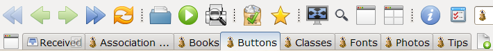 The Fit to Width button by the URL field has a hidden popup menu for show/hide/cached images. The Run field lets you run any program: enter “regedit,” “msconfig,” “calc,” etc.
The Plugins/Volume control and rename tab button sit on the page bar Tail with the Trash Can.
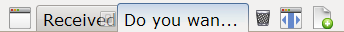The New Tab button sits on its own floating toolbar, which can also be used to hold a few more buttons. If you don’t open lots of tabs, it is a convenient place to keep the Trash can to reopen closed pages, and the Fit to Width button. The Status bar is used mostly for External Program buttons. The Status bar can be used to replace the Windows Task bar, so that you can access all of your favourite programs from Opera’s interface. | 8. Mouse Shortcuts and GesturesAnother great time saving feature of Opera is mouse shortcuts
and gestures. A mouse gesture is a programmable combination of movements with the right mouse button held down. Below are my favourite customisations. From Preferences, Mouse and Keyboard, you can edit the mouse menu to create your own. It is possible to put two commands on one gesture. If the first is not currently possible, then the second command is performed. (Thanks to dude09 for this tip) For example, if GestureDown is performed over a link, the link is opened in a background page, if
not the page is reloaded. Include a delay in a command string. for example, to show a toolbar for five or ten seconds, then hide it again. I use this to show and hide toolbars that I don’t need very often, such as the Document View toolbar, the Status bar, the Personal Bar, and the Menu Bar. ShortcutsFlipBack (Hold down the right button and click the left button) to go back. FlipForward (Hold down the left button and click the right button) to go forwards. Hold the shift key and drag on a link to open in a new page. Double-click on a word to select it. The hotclick menu pops up from which you can look up the word, translate it, search it with Google, or go to a webpage if a URL is selected.
GesturesHolding the right button … GestureDown = Open link in backgound page | Reload - GestureUp = Show popup menu, "Mouse Gesture Menu"
GestureLeft, GestureRight = Set alignment, "document view toolbar", 6
& Delay, 10000 & Set alignment, "document view toolbar" Gesture Right, GestureLeft = Set alignment, "hotlist", 0 | Set alignment, "hotlist", 6 GestureRight = Forward | Fast forward GestureRight, GestureUp = Enable menu bar & Delay, 10000 & Disable menu bar GestureUp, GestureDown = Set alignment, "personalbar", 6& Delay, 5000 & Set alignment, "personalbar" GestureDown, GestureUp = View status bar, 6 & Delay, 5000 & View status bar, 0 GestureDown, GestureLeft = Switch to previous page GestureDown, GestureRight = Switch to next page GestureDown, GestureRight, GestureUp = Undo
| 9. Keyboard Shortcuts for Typing PāliOpera can be customised to type any
text with a single keystroke. I find this useful for typing Pāli vowels in message boxes. In Preferences, Mouse and Keyboard, edit existing keystrokes or add new ones to type the Pāli characters. Since I use Pāli frequently, I prefer the easiest key combinations — aiuj ctrl = āīūñ and aiuj ctrl shift = ĀĪŪÑ. You may prefer to use the more difficult Ctrl Alter
combinations, reserving Control A for select all, which is the default. There is an option to restore the default individually for each keystroke. You can download my Unicode keyboard to try it out. Many shortcuts are different to the default keyboard so you may prefer to edit the original keyboard to suit yourself. In the keyboard edit dialogue box the left column is called “Input context and shortcuts.” The input context means where the shortcut will work. To use a shortcut globally within
Opera, the context is “Application.” To use it only in the Browser, but not in email, you would add the keystroke under the folder “Browser.” By entering my shortcuts under “Edit Widget” they work only in edit boxes, so “Control A” will still select all text on a webpage, but not in an edit box. The right-hand column is the action. In this column, enter the action of the shortcut. To type Pāli ā macron the action is Insert, “ā” To type Pāli ī macron the action is Insert, “ī” To type Pāli ū macron the action is Insert, “ū”
To type Pāli ñ tilde the action is Insert, “ñ”
| | 10. Mnemonic ShortcutsOpera used to use single key shortcuts for page navigation, replying to email, etc., for example:
These are now off by default, but they can be enabled from Preferences, Shortcuts, Enable single-key shortcuts. If you are a touch typist and get accustomed to using them it can save a lot of time for browsing. However,
though I can touch type, and have used Opera for some years, I rarely use any of them. I use them instead for easy to remember shortcuts to launch my favourite programs. Instead of taking your hands off the keyboard to use the mouse for launching programs, you can launch them with a few keystrokes. To get you started, here are a few that I find useful: *="Execute program, "calc.exe"
T, D = "Execute program, “Notepad”, "C:\My Documents\Text Files\ToDo.txt""
T, E, M, P = Execute program, “C:\TEMP”
I, E = Execute program, "iexplore", "%u"
I, V = Execute program, "C:\Program Files\IrfanView\i_view32.exe", "/clippaste"
F, T, P = Execute program, "C:\Program Files\FTP Commander\ftpcomm.exe"
B, B, C = Go to page, "http://news.bbc.co.uk/1/hi/uk/default.stm"
You can edit the keyboard via Preferences, Advanced, Shortcuts,
Keyboard, and enter your own commands in the usual way. Just copy the target from the Windows shortcut, and paste it after the Opera command like this: Execute program, <Windows Shortcut Target>. The mnemonic shortcuts can be one letter, but two or more are much easier to
remember. They are not case-senstive, you can enter them in lowercase, uppercase, or mixed case. Targets can be program paths to executables, directory paths, file names that have associated applications, or Internet addresses. Parameters can be added to some programs, e.g. %u to open the current internet page in Internet Explorer, or “/clippaste” to paste the clipboard contents
into Irfan View.
| 11. Panel ShortcutsIn the default keyboard, the panels are opened by shortcuts that open specific panels by name, using a shortcut such as: b ctrl for Focus panel, "bookmarks" | Hide panel, -1 | Set
alignment, "hotlist", 0 My Unicode keyboard uses shortcuts that open the first, second, third, etc., panel on the panel selector toolbar by using a shortcut like: 1 alt=Focus panel, 0 | Hide panel, -1 | Set alignment, "hotlist", 0. Here, “Focus panel, 0” opens the first panel, which in my case is the Bookmarks. The main advantage of this method is that you can use shortcuts to open any custom panels that you have added. Custom panels have no predefined names that could be used in a shortcut. Also, you can add, remove, or rearrange panels at any time and the shortcuts will still work. I suggest arranging the panels in the order of how frequently you use them.
1 alt=Focus panel, 0 | Hide panel, -1 | Set alignment, "hotlist", 0
2 alt=Focus panel, 1 | Hide panel, -1 | Set alignment, "hotlist", 0
3 alt=Focus panel, 2 | Hide panel, -1 | Set alignment, "hotlist", 0
4 alt=Focus panel, 3 | Hide panel, -1 | Set alignment, "hotlist", 0
5 alt=Focus panel, 4 | Hide panel, -1 | Set alignment, "hotlist", 0
6 alt=Focus panel, 5 | Hide panel, -1 | Set alignment, "hotlist", 0
7 alt=Focus panel, 6 | Hide panel, -1 | Set alignment, "hotlist", 0
8 alt=Focus panel, 7 | Hide panel, -1 | Set alignment, "hotlist", 0
9 alt=Focus panel, 8 | Hide panel, -1 | Set alignment, "hotlist", 0
0 alt=Focus panel, 9 | Hide panel, -1 | Set alignment, "hotlist", 0
- alt=Focus panel, 10 | Hide panel, -1 | Set alignment, "hotlist", 0
"= alt"=Focus panel, 11 | Hide panel, -1 | Set alignment, "hotlist", 0 I have used the Alt key as a modifier because in the default keyboard setup, Ctrl + Digit is already used for speed dial shortcuts. Ctrl 1 goes to the first speed dial, etc. | 12. Zoom ShortcutsThe default zoom shortcuts use single digits to zoom to specific zoom levels, so 1 zooms to 100% 2 zooms to 110% etc. This is a bit limited, and not that easy to remember. The Unicode keyboard uses dual action shortctus. Shortcut 1 will toggle between 100% and 120%, shortcut 2 will toggle between 120% and 200%, etc. This extends the range of zoom levels that can be reached with shortcuts and may be easier to remember. 1=Zoom to, 100 > Zoom to, 120
2=Zoom to, 120 > Zoom to, 200
3=Zoom to, 130 > Zoom to, 300
4=Zoom to, 140 > Zoom to, 400
5=Zoom to, 150 > Zoom to, 500
6=Zoom to, 160 > Zoom to, 600
7=Zoom to, 170 > Zoom to, 700
8=Zoom to, 180 > Zoom to, 800
9=Zoom to, 190 > Zoom to, 900
0=Zoom to, 100 > Zoom to, 1000
-=Zoom out, 5
"="=Zoom in, 5 | 13 Speed Dial ShortcutsThe default shortcuts use Ctrl + 1 to go to the first speed dial slot, Ctrl + 2 to go to the second etc. This was fine when we only had nine speed dial slots, but now that they are unlimited, we need a few more. The Unicode keyboard includes shortcuts for up to 20 speed dials. Ctrl + Shift doesn’t work so I used Ctrl + Alt for the double digits. 1 ctrl=Go to speed dial, 1
2 ctrl=Go to speed dial, 2
3 ctrl=Go to speed dial, 3
4 ctrl=Go to speed dial, 4
5 ctrl=Go to speed dial, 5
6 ctrl=Go to speed dial, 6
7 ctrl=Go to speed dial, 7
8 ctrl=Go to speed dial, 8
9 ctrl=Go to speed dial, 9
0 ctrl=Go to speed dial, 10
1 ctrl alt=Go to speed dial, 11
2 ctrl alt=Go to speed dial, 12
3 ctrl alt=Go to speed dial, 13
4 ctrl alt=Go to speed dial, 14
5 ctrl alt=Go to speed dial, 15
6 ctrl alt=Go to speed dial, 16
7 ctrl alt=Go to speed dial, 17
8 ctrl alt=Go to speed dial, 18
9 ctrl alt=Go to speed dial, 19
0 ctrl alt=Go to speed dial, 20 | 14. Double Click in BookmarksTo open bookmarks with a double click instead of a single click, clear the check box in the Opera configuration editor for Hotlist Single Click Single click is now the default in Opera. Some people find difficulty in selecting bookmarks because they immediately open in a new page with a single
click. To select a bookmark, or any link, without opening it, click and drag sideways. To copy or move bookmarks, click and drag, releasing the mouse button to drop them into a new folder. | 15. Copy Background Page URL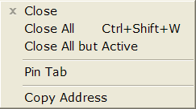When making replies on forums, you may sometimes wish to copy the address of another page that you have open in the background to provide a link to it. With my customised menu you can do this without switching from
the current page (if the page bar is displayed). Right-click on the tab of the background page, and select “Copy address” from the context menu. Copy the URL to paste it into your message. The context menu is different depending on where you click. If you right-click over any toolbar you get
the option to change to a different skin or to customise the toolbars. | 16. A Handy Popup Dictionary/ThesaurusAdd the following line to the [Hotclick Popup Menu] section of your menu.ini file in \Opera\profile\menu\ Item, WordWeb=Execute program, "C:\Program Files\WordWeb\wweb32.exe", %c,,"Wordweb" Now, when you select a word and right-click, the Wordweb option will appear on the popup menu and you can check the spelling and meaning of the word at once. Quicker and more convenient than the online dictionary/ thesaurus facility built in to Opera. If you’re learning English, the latest version of WordWeb can use real (American) English sound files (84 Mbyte). Clicking on the phonetic spelling will play the appropriate WAV file. The loudspeaker icon will pronounce words using computer synthesised speech, which is only approximately correct. This item is already included on my Customised Opera Menu. Just open the link, save the file in
\Opera\profile\menu\ then select the Customised Menu in Preferences, Advanced, Toolbars, Menus. Wordweb is a freeware dictionary/thesaurus. You need to download and install it before this tip will work.
The download is 17.7 Mbytes, but it contains a comprehensive dictionary and thesaurus, with real speech pronunciation guide sound files. | 17. Using An External Spellchecker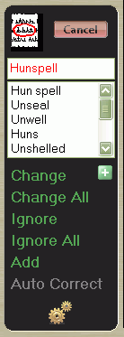Opera 10 introduced inline spell-checking using the Hunspell checker also used by OpenOffice. However, it doesn’t include a dialogue option, and inline checking is inefficient for correcting more than a few words. I recommend using Jarte — a light word-processor based on Wordpad. It has a spell-checker where it should be, in a panel at the side of the document. This is the best of all methods, as it does not obscure the text being checked, as a dialogue box does, and the buttons for replacing or ignoring words are always in the same place. Add an item like this to
the [Hotclick Popup Menu] section of your customised menu: Item, "Spell Check"=Copy,,,,"Spell Check" &
Execute program, "C:\Program Files\Jarte\Jarte.exe"
If you should wish to check text on a web page, add a similar item to the
[Document Popup Menu] section too. Hunspell cannot do that at all in Opera. If you’re quoting long blog articles then you may find it useful to edit them first. Like Wordpad, Jarte launches very fast. The added benefits of using an efficient correction method soon outweigh the few extra keystrokes it takes to paste the
copied text, start the spell-checker (F7), then copy and paste the corrected text back into Opera when you’re finished. If you don’t believe me, run your own time-trial on a 500 word article with half a dozen spelling errors. It may surprise you how inefficient inline checking is. For one word it is fine, for two or three, still not too bad, but the mouse travel is excessive because the suggestion is usually some
distance from the underlined error. In OpenOffice the suggestion is usually right underneath the error. | 18. Access to Insight Website Search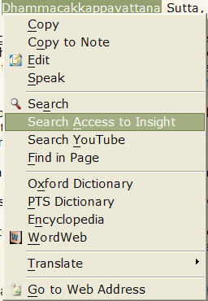From the Preferences dialogue, select the searches tab, and add a new search engine. Type “Access to Insight” for the name, “i” for the keyobard, and enter the address as follows: http://www.accesstoinsight.org/cgi/search/search.pl?Terms=%s You can search the site for any search term by entering “i search term” into Opera’s address bar. If you add this item to the [Hotclick Popup Menu] section of your customised menu:
Item, "Access to Insight" = Hotclick search, 120 Then you can select any word or phrase on a web page, right-click, and select “Access to Insight.” N.B. You will need to edit search.ini to change the Search Type
numbers. Avoid using the same Search Type number for any existing search engines. | 19. PTS Dictionary SearchFor the PTS dictionary search, the address is as follows: http://dsal.uchicago.edu/cgi-bin/philologic/search3advanced?dbname=pali&query=%s&CHAR&matchtype=exact&display=utf8 Then add this line to the [Hotclick Popup Menu] section of your customized menu.
Item, "Search &PTS Dictionary"=Hotclick search, 121 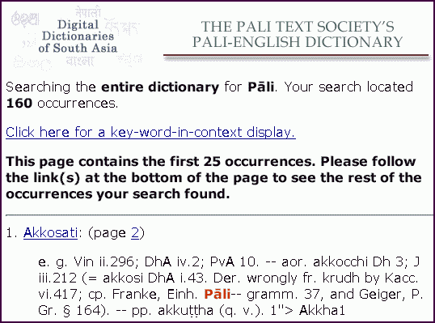N.B. You will need to edit search.ini to change the Search Type numbers. Avoid using the same Search Type
number for any existing search engines. Double-click on a word to select it, then right-click to get the hot-click menu, from which you can choose the option to search the online PTS Dictionary. The search will work with both Pāli and English words. The search term will be highlighted in red. Install one of my Unicode fonts to see the accents required for Pāli. | 20. Browsing Your Local Drives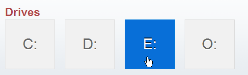Type “opera:drives” into the address field to browse your local drives. View images, documents, or multimedia files in their associated programs. Drag the floppy disk icon to your bookmarks panel toolbar, or any other toolbar to get a one-click shortcut to your local drives. This will open a Tab in Opera showing all of the drives on your PC. You can navigate the drives by clicking on the icons or the drive letters. As you drill down deeper into the directory tree structure, the header on the Folder Listing shows the full
path. Each part of this path in the header is an active link, which you can click on to quickly navigate back to the parent folders or back to the root. 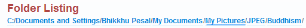By using the mouse gestures or navigation
buttons you can browse a directory of images in Opera, zooming in for a closer look if necessary. | 21. Mail Access Points MenuSeveral users have asked if it is possible to remove unwanted access points in the mail panel such as Labels,
Attachments, Active Contacts, etc. Although the latter will disappear if you delete all the entries it will immediately return as soon as you send an email. The former cannot be removed at all. The drop down menu on the mail toolbar also uses the Internal Access Points. All I need is access to Received, Sent, Outbox, Drafts, and Trash. I don’t use the Unread and Spam access points.
A workaround is to remove the Mail Panel and use a customised menu instead, which can be linked to a button. A button can show this menu with: Show hidden popup menu, “Mail Access Points Menu.” Save the following code in \Opera\profile\menu\ or append the [Mail Access Ponts Menu] section to your own customised menu file.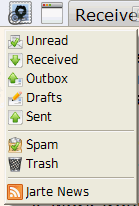 Opera Preferences version 2.1
; Do not edit this file while Opera is running
; This file is stored in UTF-8 encoding
[Version]
File Version=2
[Info]
Description=Streamlined menu with some extra features
Author=Bhikkhu Pesala
Version=1
NAME=Opera Tunny [Mail Access Points Menu]
Item, "Unread" = Read mail, 1,,,"Mark as read"
Item, "Received" = Read mail, 2,,,"View from"
Item, "Outbox" = Read mail, 3,,,"Send Mail"
Item, "Drafts" = Read mail, 4,,,"Compose Mail"
Item, "Sent" = Read mail, 5,,,"View to"
---Trash---
Item, "Spam" = Read mail, 8,,,"Mark as spam"
Item, "Trash" = Read mail, 6,,,"Show Trash"
---Feeds---
Include, Internal RSS List
If you subscribe to lots of news feeds you might like to add a submenu for them.
Add this button to any toolbar to show the Mail Access Points Menu. I keep it on the Page bar head
toolbar, to the left of the tabs, and since my page bar is always open the mail access points are easily accessible from anywhere. | 22. Web Pages Background ColourWhen web pages start to load the default background is white. This
colour can be changed in Preferences, Web Pages, Background. This background colour is also used by emails so it is worth changing it to a light pastel shade, which is easier on the eyes than bright white. | 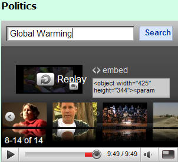23. YouTube Video PanelDrag the YouTube Video Panel link to the Panel Selector Toolbar to add the panel, or just open the link directly to preview it. The panel includes three default videos, which can be changed by copying the embed code from any video and editing the source code. I have resized the videos from the default size to 300x240 pixels to suit the size of my
1280x1024 display resolution. You can edit the size to suit your screen resolution, and include fewer or more videos in the panel. When a video has finished playing, you can use the YouTube search bar to find any other video on YouTube or scroll to related videos from the slideshow menu at the bottom of the video screen. The videos can be watched in
the panel while browsing other pages, or maximized to fill the entire screen. |
|
|
|
| | | | © You may print any of these books for your own use. However, all rights are reserved. You may not use any of the site content on your own website, nor for commercial distribution. To publish the books, permission must be sought from the appropriate copyright owners. If you
post an extract on a forum, post a link to the appropriate page. Please do not link directly to PDF, MP3, or ZIP files. (This page last updated on 24 January 2012) |
| |
| |